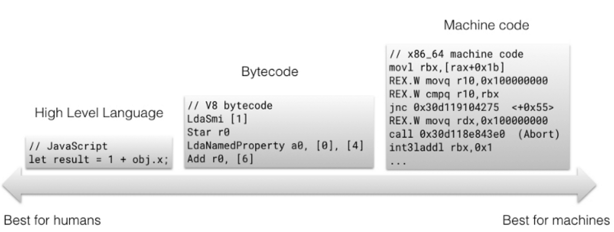

V8 内存优化之 Ignition 解释器
由于 V8 的 “full-codegen” 基线编译器在解析 AST 之后生成的机器码十分冗长，因此会大量占用 V8 的堆内存。V8 为了减少生成的机器码以缓解内存压力，尝试了大量“延迟解析和编译（Lazy parsing and compiling）”的工作。比如对于一段代码，如果这段代码中的函数没有在初始化时被调用，则该调用过程将会被“延迟”进行，直到第一次函数调用时再编译该函数对应的代码。
但这样并没有解决实际的问题。没有在初始化时被编译运行的代码会在再次被调用时又进行一次编译过程（Parsing 生成 AST），这显然是没有必要的。Ignition 取代了直接使用 “full-codegen” 的方式。Ignition 使用低层次的比特码（Bytecode）作为自己的输出，相比 “full-codegen” 生成的机器码，比特码具有更高的信息密度。相较于机器码，比特码属于更高层次的代码，因此经过 Ignition 产生比特码的过程十分迅速。更可观的是，比特码可以直接加载到 TurboFan 的图生成器中转换为优化后的机器码，从而省去了再次 Parsing 的过程。
从上述图片中可以看到，在 V8 没有引入 Ignition 之前，对于 hot 和 non-hot 类型的代码要分别做两次 Parsing 的过程。hot 的代码在经过 Parsing 后会通过 TurboFan 或者 CrankShaft 进行优化，之后生成优化后的代码。
在最理想的方式中，我们已经去掉了 “full-codegen” 的过程，直接使用比特码作为连接到优化编译器的输入。但事实上，由于只有 TurboFan 支持直接从 Ignition 的比特码进行优化，处在同样位置的 CrankShaft 仍然需要一个前置的 Parser 来生成 AST，当 CrankShaft 需要进行去优化的过程（JIT 的特性，优化编译器通常是尝试的去进行优化，如果优化失败会进行去优化，则回退到之前的流程）时，只能反向回退到 “full-codegen” 生成的机器码，这就导致了实际上现在的 V8 优化 Pipeline 中的 “full-codegen” 并没有被完全移除。另一方面，由于 TurboFan 的性能并没有达到预期，因此这里的 CrankShaft 也不能被完全移除，因此实际上的 Pipeline 如下图所示。
关于 Ignition 生成的比特码结构如下所示。Ignition 本身是一种基于累加器的寄存器型解释器，关于比特码的执行流程可以参考这篇文章。

- full-codegen：快速生成机器码，并不进行类型检查，通过 Inline Cache 的方式来收集类型相关的信息；
- TurboFan／CrankShaft：优化 hot 代码，通过之前保存的 Inline Cache 来进一步分析代码的优化方案，通过“类型特化”等方式大幅度提升代码性能；